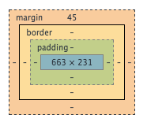

So what *is* the difference between margin, border, and padding? Think of a square on a piece of paper. A very stretcy square... Lets say the square is NORMALLY a 4 X 4. Then someone comes around and decides to stretch to square and make it a 6 x 6. The square looks bigger now but its contents are still the same. That's padding!
As for the border, it is just the outline of the square. You can make the outline solid or dashed or double lined. The outline can also be made thicker or thinner.
Now lets say the square is sick of not having any privacy so now it wants space. Specifically, it wants nobody to get any closer than 20px. In CSS, this would be "margin: 20px 20px 20px 20px;", which goes top, right, bottom, left of the square, respectively. For example, "margin: 25px 50px 100px 75px;" means the square will have a space of 25px on top, 50px on the right, 100px on the bottom, and 75px on the left.
If only one side needs margin space, it can be specified by using "margin-right: 20px;", "margin-bottom: 20px;", and so on.

Now... the important thing is to remember is that the square is a representation of a piece of content. If you add padding to a paragraph section, you are adding space 'inside' the paragraph and giving the text more room. Adding a border around the paragraph will help you see where the padding ends and the margin begins. Adding margin means adding space 'outside' the paragraph and gives the paragraph section clearance from other contents on the page.
I hope my analogy helps so please let me know if I can do anything to improve.